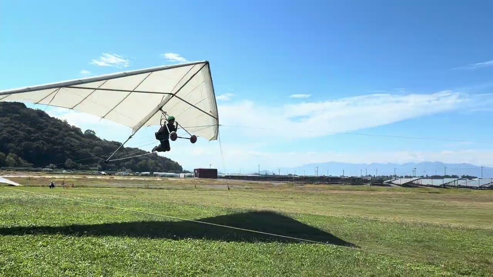
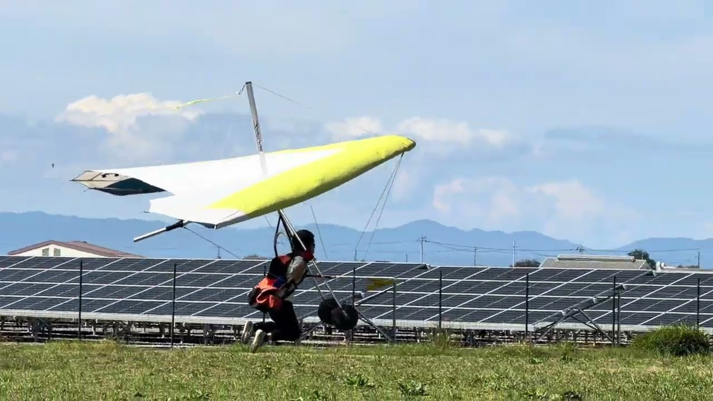

トーイングについて
- グラハン時より、アタックアングルを少し高めにホールドしてテイクオフする
- 飛ぶ人自身も周りで見てる練習生も、ピッチの高さを意識する
教本 p54〜

330
特徴
- 大型で直進安定性が高い
- 傾くと修正しづらい
- テールをついてホールドする
練習すること
- コントロールしやすい姿勢を身につける
- テイクオフからフレアーまでの流れに慣れる
ポイント
- 軽く引く
- 遠くを見る
並行して練習
- 姿勢はシミュレーターも使って修正する
教本 p47〜 - 持ち替えはグラハンでも並行して練習する
教本 p43〜、p66〜
姿勢について
ハンググライダーは体重移動でコントロールするので、正しい姿勢が取れるかがコントロールの精度を決めるほど重要です。
お互いに動画を撮って確認し、常に修正を心がけましょう。
330フリー
姿勢と、テイクオフからフレアーまでの流れが無意識的にできるようになったら、フリーで確認します。
- 風が穏やかな時にしかできない
- セーフトーの時からフリーを意識して飛ぶ
225
特徴
- 滑空性能が上がり、レベルキープがある
- 直進安定性は高く、細かいコントロールはそこまで求められない
- 330より少し速度が上がる
- テールを持ち上げてホールドする
ポイント
- テイクオフで傾けない
練習生同士で声かけやサポートを行う
教本 p70〜 - レベルキープを作る
フレアーのタイミングが早いとロケットする
教本 p72〜
サポートについて
225を練習する時点で、グラハンが完璧な人はまずいません。
ピッチの高さや左右の傾きを声かけするほか、コントロールバーが大きくてホールドできない場合や、風が不安定な場合は、サイドワイヤーを持ってテイクオフをサポートしてもらって構いません。
ただしサポートする側は、完全にサポートするのではなく、その人にどこまで手助けが必要なのかを各自で考えて行動してください。
無線機について
フリーで飛べるようになったら、個人の無線機を使ってください。
設定についてはこちらから。

山飛びサイズ
(145/170/195)
(145/170/195)
特徴
- コントロールが効きやすい分、取られやすい
- 速度が速い
ポイント
- 細かくコントロールし、蛇行を減らす
- 常に先を予測して練習する
山飛びに向けて
セットアップをはじめ、山飛びに向けた知識や意識を持つことが、この時期の練習において最も重要。
ターン練習
直線飛行が安定し、中高度まで上げられるようになったらターン練習をする。
ポイント
- 目標とルートを意識して飛ぶ
- ターン前に加速する
- ターン後のピッチアップを抑える
教本 p76〜
誘導について
初飛びは無線の誘導に従って降りてきます。
ターン練習の段階から、無線の誘導に素早く従う意識を持っておきましょう。
また、無線が聞こえないなどのトラブルがあった場合は、足をバタバタして伝えることも覚えておきましょう。
練習を通して意識すること
100点の飛びにこだわるよりも、毎回大きく崩れないことを大切にしましょう。
山飛びに必要なのは完璧なフライトではなく、何かあっても修正できる対応力です。
初飛びに向けて
誘導への反応
ターン練習の誘導で、無線を聞いてから反応が遅れていないか確認しよう。
小山グラハン
ランチャー台でのテイクオフをイメージしておく。
ランディングマップ
アプローチと、目標の名称を頭に入れよう。
初飛び集
他の人の初飛びを見て、流れをつかんでおこう。
追加の装備
無線機を2個、アクションカメラも使い方を確認して、必ずつけて飛ぼう。共用カメラの使い方
各段階の進行はあくまで目安です。実際の練習内容や初飛びの判断は、当日の条件と指導者の判断を優先してください。
← 練習ガイドへ戻る